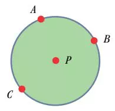
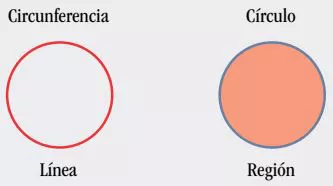
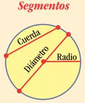
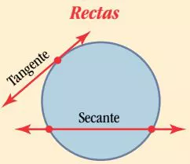
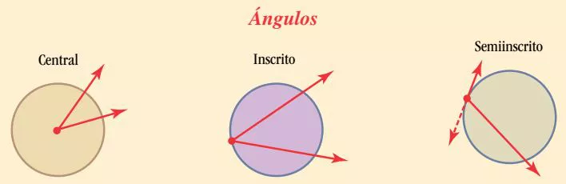
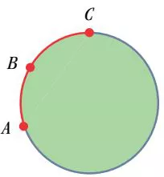

DefiniciónUna circunferencia es una figura plana formada por puntos que equidistan de un punto fijo en el mismo plano.
El punto fijo es el centro de la circunferencia.
Una circunferencia se puede considerar como el caso límite de un polígono cuando el número de lados de éste crece infinitamente.
Para referirse a una circunferencia se usan tres puntos sobre ella, o bien se usa el signo \( \odot \) P, que se lee: “circunferencia con centro en P”.

Aunque a veces se les toma como sinónimos, círculo y circunferencia son distintos:

La circunferencia es la línea que delimita al círculo. Comúnmente se acepta que forma parte de éste. El circulo incluye a la circunferencia y al área delimitada por la circunferencia
Longitud de una circunferenciaLa longitud o perímetro C de una circunferencia de radio r es:
\(\displaystyle C=2 \pi r=\pi d \)
Segmentos de una circunferencia
Un radio es todo segmento que une el centro con cualquier punto de la circunferencia.
Una cuerda es todo segmento que une dos puntos de la circunferencia.
Un diámetro es toda cuerda que pasa por el centro de la circunferencia.
Rectas de una circunferencia
Tangente. Cualquier recta que toca en un solo punto a la circunferencia.
Secante. Cualquier recta que toca en dos puntos a la circunferencia.
Ángulos de una circunferencia
Los ángulos centrales tienen su vértice en el centro de la circunferencia.
Los ángulos inscritos tienen su vértice en la circunferencia, y sus lados son secantes.
Los semiinscritos tienen su vértice en la circunferencia, un lado es secante y el otro es tangente.
Los lados de estos ángulos interceptan una porción de circunferencia denominada arco. Los arcos se denotan con tres puntos, que son: sus dos extremos y un punto entre ellos.
\(Arco\,ABC =\widehat{ABC}\)

El valor de "Pi"La letra \(\pi\) fue utilizada por los antiguos griegos para representar la razón entre una circunferencia y su diámetro, y que es la letra inicial de la palabra "perímetros" escrita en griego.
\(\pi\varepsilon\rho\iota\mu\varepsilon\tau\rho\omicron\zeta\)
El valor de \(\pi\) se obtiene al dividir el perímetro de la circunferencia entre el valor del diámetro.
\(\displaystyle \pi=\frac {C}{d}=\frac{C}{2r}\)
El valor que se obtiene de \(\pi\) es el mismo independientemente del tamaño de la circunferencia.
Arquímedes de Siracusa calculó, en el siglo III a. C., la relación entre la longitud C de la circunferencia y su radio r, aproximando el valor de la razón \(C/2r=3.1415...\) mediante un círculo de radio 1 y polígonos de hasta 96 lados.